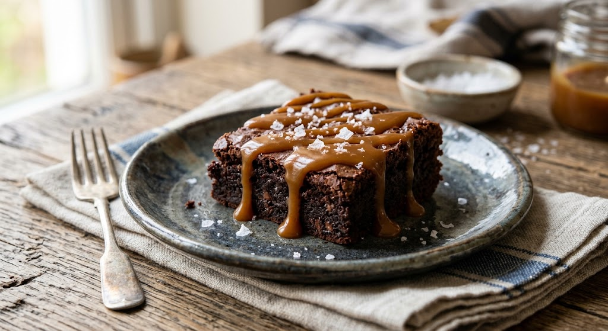

Salted Caramel Brownies
by Daniel

A rich fudgy chocolate brownie with a shiny, slightly crackly top Drizzled with warm, golden salted caramel sauce and sprinkles with course flaky sea salt. Best served warm.

A rich fudgy chocolate brownie with a shiny, slightly crackly top Drizzled with warm, golden salted caramel sauce and sprinkles with course flaky sea salt. Best served warm.
"These are hands down the best brownies I have ever baked. The salty caramel swirl balances out the rich chocolate perfectly. They were completely gone within two hours of coming out of the oven!"
"Rich, fudgy, and super easy to make. I added a handful of toasted pecans to the batter for extra texture and it turned out amazing. Will definitely be keeping this recipe on repeat."
"The flaky sea salt on top makes all the difference! The recipe is straightforward and foolproof—just make sure you let them cool completely before slicing so the caramel sets."